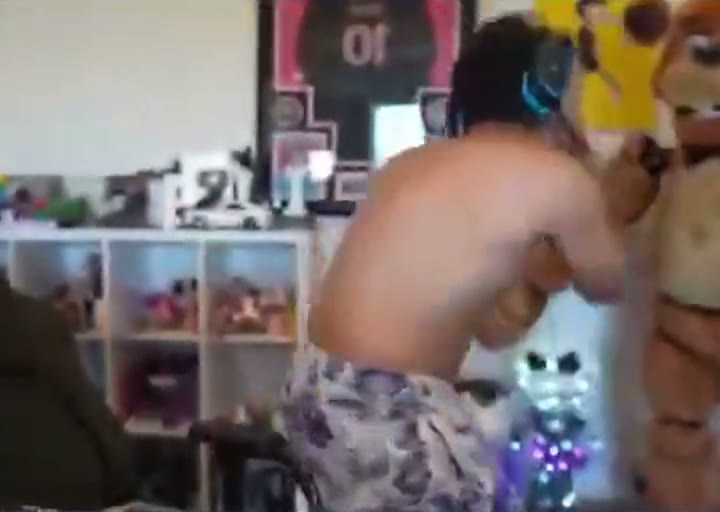
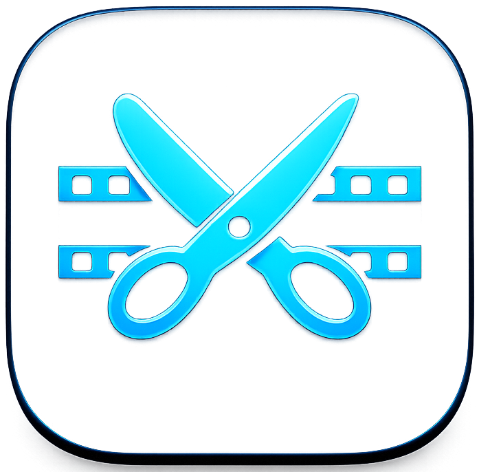

Cuts pauses and filler words
Tight, Natural or Gentle sets how much air stays between sentences. Each “um” and “uh” is marked and removed.
Chrome extension · Twitch and Kick · 7 days free
CLIPPR keeps up to the last 5 minutes of any stream you watch. Press Alt+S and the clip is saved in about 2 seconds, ready to caption and cut into a short.
For Chrome 124 or newer. Nothing is uploaded.
Pick one of 30 caption looks or any of 2,093 fonts. The spoken word lights up on time, and one switch turns the highlight off. This is the real editor: press play, pick a look, or click a caption on the timeline.
Captions12
Properties
Streamer / trending
None of these eight; the extension searches all 2,093.
Tight, Natural or Gentle sets how much air stays between sentences. Each “um” and “uh” is marked and removed.
Face detection scans the clip and snaps a box to the webcam overlay. The facecam goes on top, gameplay below.
Loudness, hype words and speech are scored across the clip. The top moments of 15 to 60 seconds are offered to keep.
Shouts, wins and big numbers get a colour of their own, and an emoji pops in above the line. One switch turns either off.

CLIPPR holds 1 to 5 minutes of the stream in memory. The shortcut saves the last 15 to 120 seconds as an MP4.

CLIPPRRecordingGaming, IRL, Meme reaction, Podcast or Just captions. Captions, cuts, framing and a hook title land in about 13 seconds.
🎮 Gaming highlight
Facecam on top, gameplay below, punchy captions
MP4 or WebM from 720p to 4K, saved to Downloads/Clippr/Exports and ready to post, Reels included.
Your clips never touch a server. The stream is cut, captioned and exported inside Chrome, and the files land in your Downloads folder.
Try every feature free for 7 days. Cancel before the trial ends and you pay nothing.
For anyone who clips Twitch or Kick streams
$9.99a month after the trial
Start the free trialLive streams on Twitch and Kick. YouTube and past broadcasts are not supported yet.
Open CLIPPR in the Chrome Web Store and click Add to Chrome. It updates itself from there.
The shortcut saves 15 to 120 seconds, set in the popup. The buffer holds 1, 2, 3 or 5 minutes, and Alt+Shift+S saves all of it.
Into the extension’s library and your Downloads/Clippr folder, one folder per channel. Exports go to Downloads/Clippr/Exports.
It downloads the stream a second time, about 60 MB a minute at 1080p60. Pick a lower recording quality in the popup to save data.
Once, to download the speech model. After that they run on your computer, or through your own Groq or OpenAI key if you add one.
Chrome 124 or newer. Other Chromium browsers may load it, but they are not tested.
No. CLIPPR saves what your player already shows and sends no clip to Twitch or Kick.